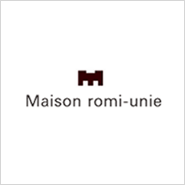
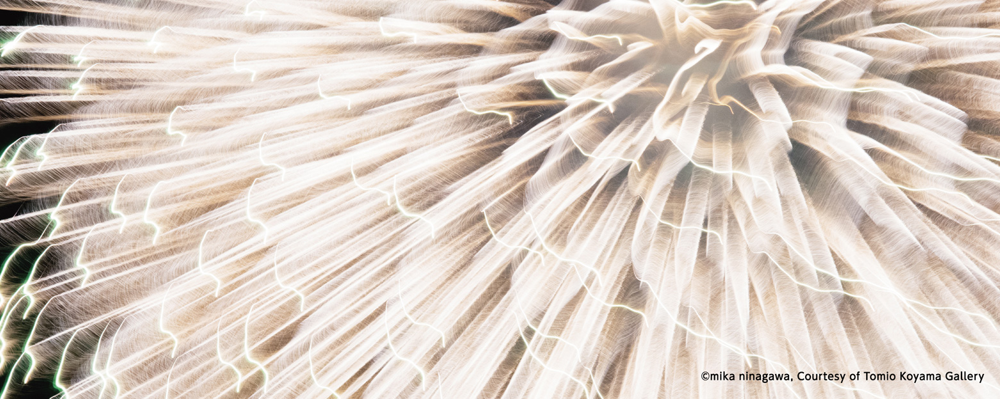
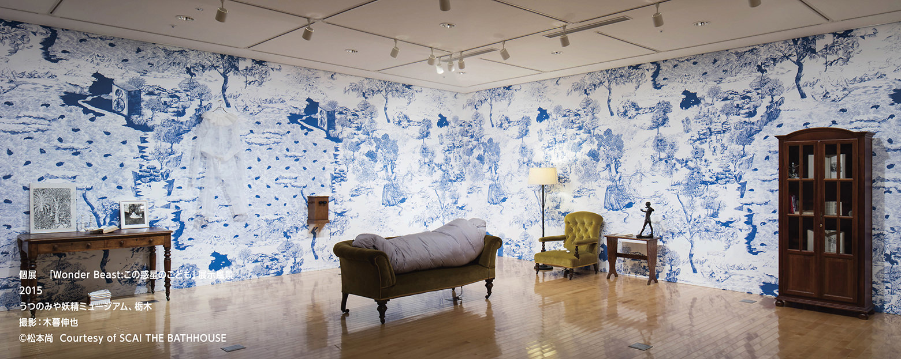
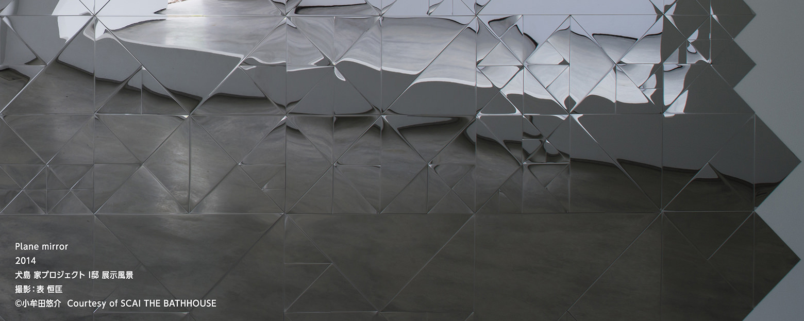
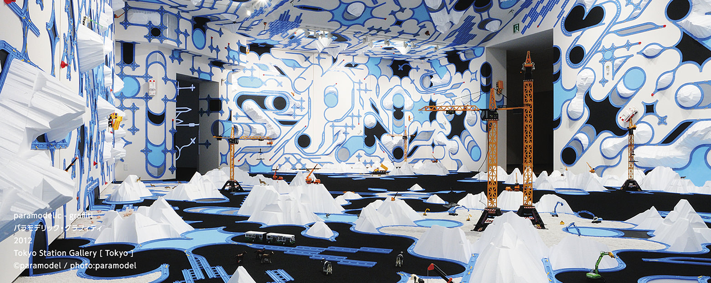
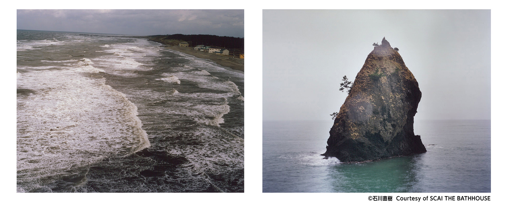
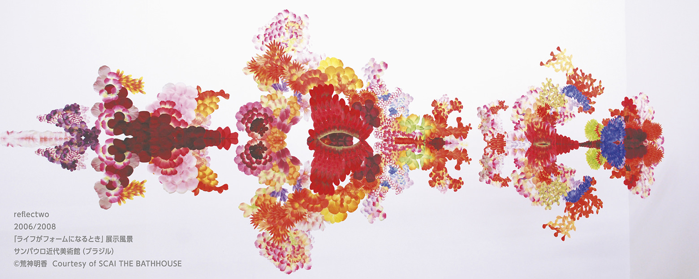
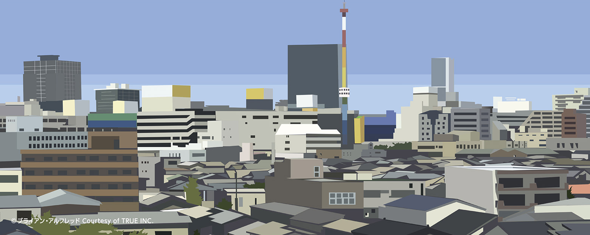

The Traveling Museum “GENBI SHINKANSEN”
JR East is proud to announce the world’s fastest art appreciation, the “GENBI SHINKANSEN” scheduled to commence services in spring 2016 on the Joetsu Shinkansen between Echigo Yuzawa and Niigata.
Here, passengers can enjoy modern art created especially for GENBI by some of today’s most prominent artists as well as a café that serves coffee and sweets dedicated to local ingredients and train windows that look out to the breathtaking scenery outside.
We hope that you take this unique opportunity to appreciate modern art on a racing shinkansen.
-
TRANSIT GENERAL OFFICE
Sadahiro Nakamura/Hikaru OkadaTOTAL PRODUCEThe Traveling Museum “GENBI SHINKANSEN”
This is a unique project of appreciating modern art while traveling on a shinkansen. The difficulty in setting up big installations in the confined space of a shinkansen car has resulted in the production of space with focus on “interactive”, “story”, and “trick” elements. The challenge was in how we would have visitors spend their time with art in the seemingly short but actually long distance between Echigo Yuzawa and Niigata. Our hopes will be answered if we can create a memorable experience that people will wish they had more time to enjoy.
Of the six cars, one will be a car reserved for special, limited-time exhibitions. Here, the exhibition will change periodically with irregular performance art surprise as well.
We hope that this playful addition to railways, essentially a means of transport, will create a different impulse and awareness and contribute to greater tourism in Niigata. -
DIAGRAM Co., Ltd.
Naoyuki SuzukiGRAPHIC DESIGNBorn 1964 in Shibata, Niigata. President of DIAGRAM Co., Ltd. Art Director/Graphic Designer
1991, founded Tycoon Graphics together with Yuichi Miyashi. CI &Branding, facility logo & signage, space direction, advertising, package design, product development, and editorial design. [Main Works] Omotesando Hills logo and interior graphics, TOKYO SKYTREE observatory logo & wall production, art direction and design for the Suruga Bank “d-labo” logo and website. 2013, appointed President of DIAGRAM Co., Ltd. Currently involved in projects with various corporations in a mission to further expand the possibilities of design.
Recipient of the New York ADC Award Gold/Silver
Good Design Award in Communication Mainichi Design Award among others. -

©romi-unie
Representative Romi IgarashiPASTRY DIRECTIONBorn 1971. Romi’s love for sweets since as a little girl drove her to Minako Imada’s baking classes at the age of 16. After joining the production unit of a French pastry shop, Romi went to study French pastries at Le Cordon Bleu in Paris. After her return, she worked at the head office of the Le Cordon Bleu School in Tokyo while helping out in various food events. Romi started her career as a sweets expert in 2002 with the launch of romi-unie.
Romi spreads the joy of baking through her essay series on Café Sweets by Shibata Shoten, magazines, books, TV, and events. Opened “Romi-Unie Confiture”, a jam specialty store in Kamakura in 2004. Opened “Maison romi-unie”, a sweets and jam store in Gakugei Daigaku in 2008. Baking classes, “Uni-Labo” is held on the second floor of “Maison romi-unie”. 2007, romi produced “Fairycake Fair”, a cupcake shop inside Gransta in Tokyo Station while in 2011, She opened a scone shop “home Fairycake Fair” inside LUMINE Yurakucho, overseeing everything from the development of the menu to store planning.
In other areas, she is a lecturer for Tokyo Gas, develops products for drink and sweets manufacturers, develops café menus, is an advisor, and also designs everyday goods and products. -

Tsubame Coffee
YOSHIYUKI TANAKACOFFEE DIRECTIONBorn 1978 in Niigata.
November 2012, opened Tsubame Coffee, a home roast coffee shop next to a beauty salon in Tsubame, Niigata.
July 2014, added on a new tearoom and daily goods store.
All coffee beans are home roasted inside the store to make coffee with a clear and refreshing flavor. The tearoom, with an entire wall turned into a bookshelf, is visited by fans from near and far.
The name Tsubame Coffee takes its name from Tsubame City and the store logo was created by Ichio Otsuka, an artist from Joetsu, Niigata.
-

Mika Ninagawa ｜ Photographer/Film Director
-

Nao Matsumoto ｜ Artist
-

Yusuke Komuta ｜ Artist
-

Kentaro Kobuke ｜ Artist
-

Paramodel ｜ Art unit
-

Naoki Ishikawa ｜ Photographer
-

Haruka Kojin ｜ Artist
-

Brian Alfred ｜ Artist
Nao Matsumoto ｜ Artist
Born 1975 in Hyogo Prefecture. Masters graduate of the Kyoto City University of Arts Graduate School of Arts Department of Visual Design. Matsumoto creates installations using silk cloth, carpets, and wallpaper. From mythology to lores of all ages and cultures to modern literature, Matsumoto draws from a vast range of written works to reflect through the world of fiction her different emotions.
Main exhibitions include “SENJIRU-infusion” Galerie Kashya Heildebrand (Zurich), 2010 “MOT Annual 2010 Neo-Orientalism from Japanese Contemporary Art” (Museum of Contemporary Art Tokyo, Tokyo), “HANA Genjitsu to Kyokou ga Toke-atta Shikaku no Bouken” (Oyama City Kurumaya Museum of Art), 2013 “Kawagoe: Kira Kira Hikaru” (Curator Yuko Hasegawa, Kawagoe Museum of Kurazukuri, Saitama), “Kanata no Uta” (Art Space Niji, Kyoto), 2015 “Wonder Beast: Kono Wakusei no Kodomo” (SCAI THE BATHHOUSE, Tokyo) (Utsunomiya Fairy Museum, Tochigi)
Matsumoto’s work spans across a wide range of areas including collaboration with fashion brand NEMIKA (Hiroo Shop, Tamagawa Shop) in 2015.
http://naomatumoto.turukusa.com/
Yusuke Komuta ｜ Artist
Born 1983 in Osaka, MFA Tokyo University of the Arts, Graduate School of Fine Arts, Department of Intermedia Art. Komuta works across various mediums such as abstract paintings of bright color and prisms with origami development diagrams as its motif and mobile 3D works using mirror stainless materials to explore through the effects of light and color, reversal conditions like internal-external or construction-dismantlement. Main exhibitions include the solo exhibition, “COLOR UNFOLDS” (SCAI THE BATHHOUSE, Tokyo.) Group exhibitions include 2011 “NEW DIRECTION: TRANS-PLEX” (Kuandu Museum of Fine Arts, Taipei National University of the Arts, Taipei), “Tradition, Contemporary, Generation Drawing Exhibition” (The University Art Museum, Tokyo University of the Arts, Tokyo), 2012 “[cloud/crowd]” (Tama Art University Art Science, Curatorial Practice in the Urban Environment Yuko Hasegawa Seminar Exhibition, Gallery LE DECO, Tokyo.) 2014, Komuta announced his new work at the Inujima “Art House Project” (I-Art House, Okayama.)
Kentaro Kobuke ｜ Artist
Born 1998 in Hiroshima, graduate of the Kuwasawa Design School. 2009, received an MA for Fine Arts from the Chelsea College of Arts and Design in London where he is also currently based. While Kobuke’s portraits and urban and natural sceneries drawn with colored pencil appear to be a world of imagination, they are at the same time a portrayal of the actual conditions found in society. People with dreamy crystal eyes portrayed inside his distinct world of vivid color stirs a sense of comfortable familiarity for the viewer.
Participant of the 2014-2015 group exhibition “17th DOMANI: The Art of Tomorrow” at the National Art Center, Tokyo. Main solo exhibitions include “Letter” at the Nakata Museum of Art (Onomichi, Hiroshima) in 2012 and “MOKUME” at the Daiwa Anglo-Japanese Foundation at London in 2011.
http://www.kobuke.com
Paramodel ｜ Art unit
Art unit formed in 2001 by Yasuhiko Hayashi (after working as a designer, graduated from Kyoto City University of the Arts, Concept and Media Planning in 2001) and Yusuke Nakano (2002 graduate of the same university with major in Nihonga.) The unit was named “Paramodel” in 2003. Both artists are from Higashiosaka. The two artists with opposite [parallels] of specialities and taste work together under the core concept of “paramodel: poetical models/diagrams built by various parts found in the world and inside the heart”.
Building on their [parallax], the duo create works in various mediums infused with an element of “playful models.” Solo exhibitions include the Michigan State University Museum, Maison Hermes 8F Forum, and multiple exhibitions at home and abroad including the Museum of Contemporary Art Tokyo, The National Museum of Art Osaka, Yokosuka Museum of Art, Asia Pacific Art Trienalle 7, and Perth International Art Festival 2014.
Naoki Ishikawa ｜ Photographer
Born 1977 in Tokyo. Completed the Doctoral Program in the Faculty of Fine Arts at the Tokyo Univesity of the Arts. Traveled solely by human-powered means of transport from the North to South Pole in the 2000 Pole to Pole Project. 2001, climbed to the top of the Seven Summits. With interests in anthropology and folklore, Ishikawa has continued to introduce works based on travel and transport as an act of experience. 2008, prized The Newcomer's Award from the Photographic Society of Japan, The Kodansha Publishing Culture Award for Photography for photo collections “NEW DIMENSION” (AKAAKA Art Publishing) and “POLAR” (Little More.) 2011, received the Domon Ken Award for “CORONA” (Seidosha.) Publications include the Kaiko Takeshi Non-Fiction Award winning “Saigo no Boukenka (The Last Adventurer)” and many more. July 2015, published “KATA and SATOYAMA” (Seidosha), a photo collection of Niigata. Participated in the “Water and Land Niigata Art Festival 2015” (July 18-October 12) where he announced the “KATA and SATOYAMA” photo collection and film.
http://www.straightree.com©
Haruka Kojin ｜ Artist
Born 1983 in Hiroshima. 2009, completed her Master’s Degree at the Department of Intermedia Art, Tokyo University of the Arts. Installations inspired by childhood experiences, daily discoveries, and whim are turned into three-dimensional contraptions that transform the viewer’s conscience and defamiliarize the entire space. In recent years, Kojin has been working together with wah document in the Group Me. Main exhibitions include “Space for your future” Museum of Contemporary Art Tokyo in 2007, “Eyes and Curiosity VOL. 2” (Soka Art Center, Taipei) and “Quando vidas se tornam forma” (Museu de Arte Moderna, Sao Paulo) in 2008, and “Bye Bye Kitty” (Japan Society Gallery, New York) in 2011. 2013, announced “reflectwo” at the A-Art House in the Inujima “Art House Project” (Okayama) and “contact lens” at the S-Art House. Work with Group Me include the 2013 “Maze Town, Phantasmagoric Alleys” (ART SETOUCHI, Kagawa), “Unreliable Reality—The Where of This World” (Shiseido Gallery, Tokyo), and many more.
Brian Alfred ｜ Artist
Born 1974 in Pittsburgh, Pennsylvania, MFA Yale University. Currently based in New York. Alfred is widely celebrated for his poetical perspective of real modern images such as social issues lurking in wired societies and everyday life, international conflicts, and pop culture. His methods in presenting personal views freely across multiple media such as film, painting, collage, and music are recognized highly in the United States and aborad. His works have been included in the archives of the Guggenheim Museum, Whitney Museum of American Art, Denver Art Museum, and the San Francisco Museum of Modern Art.
In Japan, Alfred has received the Excellence Award in the Art Division of the 2011 Japan Media Arts Festival. He announced a film piece at the 2010 Aichi Triennale. Multiple collaborations, including project with fashion brand “rag & bone.”
http://paintchanger.com
Mika Ninagawa ｜ Photographer/Film Director
Recipient of numerous photography awards including the Kimura Ihei Photography Award. Ninagawa is not only a photographer but has also created various movie works. In 2007, she directed her first film SAKURAN to start off her career as a film director. Her retrospective solo exhibition in 2008 “Mika Ninagawa: Earthly Flowers, Heavenly Colors” toured art museums throughout Japan and attracted over 180,000 visitors. In 2010, the artist published her photo book “MIKA NINAGAWA” with Rizzoli N.Y. Her second film “Helter Skelter” was released in 2012 and has recorded more than 2.2 billion Japanese yen at the box office. In 2014, she was appointed as one of the executive board members for the 2020 Tokyo Organising Committee of the Olympic and Paralympic Games.
http://ninamika.com
-
-
- Nao Matsumoto
- Yusuke Komuta
- Kentaro Kobuke
- paramodel
- Naoki Ishikawa
- Haruka Kojin
- Brian Alfred
- Mika Ninagawa
-
F/style
Emi Igarashi/Wakana Hoshino
A design studio opened in 2001 in our hometown of Niigata. F/style bridges the gap between local producers and users by undertaking entire processes down to building sales channels. We take products that enrich lives, such as traditional crafts, everyday items, clothes, and accessories that have been created together with factories and craftsmen running family-scale businesses and place them in shops across the country.
In Niigata, we have a shop and studio that is open just two days a week. When we started F/style 15 years ago, it was still a time when Japan’s local industries and crafts received little or no attention at all. Our goal was to search for a way of production that left the craftsmen in control with little burden on the producer and yet left all satisfied. Today, the number of people who understand and support our business has grown and connections with others have led to new encounters with many taking the time to visit us in Niigata. We hope that people will continue visiting us at this hub of people and information while also looking forward to sharing with them Niigata’s many beautiful features, including its people. -
CAVE D’OCCI
European Grape Cultivation Laboratory Co.CEO Takashi Imai
Our grape cultivation was started in 1992 at the foot of Mt. Kakuda, known locally for its beaches. Niigata is synonymous to rice and sake. Regardless of, we were determined to grow grapes for winemaking on this sandy land where there weren’t even rice paddies. Our late president said that the reason he started something that nobody had ever imagined possible was because he wanted to do something “unique” that no one else could compare to. Every year, little by little, the wine fields are being expanded by cover cropping, thanks to the help of local farmers. Today, with winemaking at it core, we also offer an auberge, spa, hot spring, agrotourism, and a winery management school with the business growing in more and more directions. In our quest of becoming the Napa Valley of Japan, our goal is to create another reason for people to come discover Niigata. We hope that everyone will arrive on GENBI, spend the night, and enjoy a winery holiday.
-
Satoyama Jujo Jiyujin Co., Ltd.
Creative Director Toru Iwasa
Niigata is a prefecture connected deeply with art. Needless to say, there is the Echigo-Tsumari Art Trienalle, but we also have the Echigo-Jofu ramie fabric registered as a UNESCO intangible cultural heritage, crafts such as Shiozawa-Tsumugi silk fabric, and traditional arts called Shiozawa Kabuki that has been passed down for generations. Historically, in addition to rich harvests, the land was blessed with prosperity and culture thanks to the Shinano River that brought trade by Kitamae Ships. Today, the Joetsu Shinkansen has taken the place of rivers as the carrier of people and culture. The tunnel portrayed in Yasunari Kawabata’s “Snow Country” is now a path for the Joetsu Shinkansen having succeeded the steam locomotive of the past. I can’t help but feel that the connection between this shinkansen and art is an encounter brought together by fate. If you have the chance to visit Niigata on GENBI, please, by all means stop by our Satoyama Jujo Hotel. We will be awaiting you with our 10 creative experiences of food, home, clothing, agriculture, environment, art, play, comfort, health, and people.
-
Gyokusendo Gyokusendo Co., Ltd./President
7th Generation Motoyuki Tamagawa
We have been dedicated to producing hand-hammered copperware since 1816 here in Tsubame Sanjo, famous as one of the world’s leading producers of metal ware. Traditional craft is a historical jewel of skills and culture that have been polished and refined over generations. Our mission is to keep this treasure passed down by our ancestors alive and create products that can be used as tools in our modern lives while also appreciating its beauty. In recent years, we have been receiving wider recognition from overseas, as exemplified by the wine cooler produced for prestige champagne KRUG. Niigata is less than two hours from Tokyo on the Joetsu Shinkansen. Our workshop welcomes visitors from all over the world via Tokyo. Every year, Tsubame Sanjo hosts an event called “Factory Festival” where more than 50 factories open their doors to the public. I hope that Tsubame Sanjo will grow into an international industrial tourism city through these tourist resources, our factories. After you’ve seen the art on Genbi, please stop by the factories of Tsubame Sanjo and experience Niigata’s rich food culture served on dishes made in Tsubame Sanjo.
-
Niigata Soh-Odori Art Mix Japan
Executive Producer Takeshi Noto
There was a time in Niigata history, the Edo Period to be exact; when there was a festival where people danced for four days and four nights straight. The “Niigata Soh-Odori Festival” was started in 2002 with the mission of bringing back this festival that disappeared with the war and to pass on inspiration and excitement to tomorrow’s generation through different kinds of dance. After 14 years, this festival has grown into Japan’s largest dance event, participated by 230 organizations and 15,000 people and visited by 210,000. At this festival, the Niigata people, usually known for their shy and easy going nature, beat energetically on a taru-kinuta, a sake barrel drum that people used to beat on to entertain guests, and dance fervently in small wooden clogs to rhythmic calls. This is a must see event. Other than this festival, we host an event called “Art Mix Japan” where visitors can go from one traditional arts performance like Kabuki and Japanese drums to another. So please hop on the GENBI, an art piece of its own, and come discover the beautiful and exciting events and festivals of Niigata.
-
Nagaoka Festival Council
Director General Kaoru Fujii
The Nagaoka Festival started as a festival praying for recovery from war, one year after the Nagaoka air raid on August 1, 1945. Though the Nagaoka Fireworks dates back to 1879 at Senju-machi Hachiman Shrine, following World War II and the Chuetsu Earthquake, the fireworks came to be shot into the air as a prayer for recovery from the disasters of each generation and in commemoration of the war dead. This year, 1.04 million people visited the festival. The Joetsu Shinkansen transports people to and from the festival. Fireworks are a form of art but Nagaoka’s history in modern art is actually a long one dating back to 1964 with the opening of the Nagaoka Museum of Contemporary Art (closed in 1979), the first ever modern art museum to be built in Japan. That is why I can’t help but feel a strange fate in the fact that a modern art shinkansen will be running here to Nagaoka. What’s more, I have been told that GENBI’s cars will be wrapped with pictures of Nagaoka fireworks. This is a beautiful encounter between art and fireworks praying for peace. We are already counting the days until GENBI races along on its tracks.
Press Contact
-
TRANSIT GENERAL OFFICE
Saya Matsunami／Mari Enomoto3-5-6seihou Bld.3kai, Kitaaoyama, Minato-ku, Tokyo, 107-0061, Japan
TEL：03-6826-5660 FAX：03-6826-5675
E-mail：tgo-press@transit-web.com